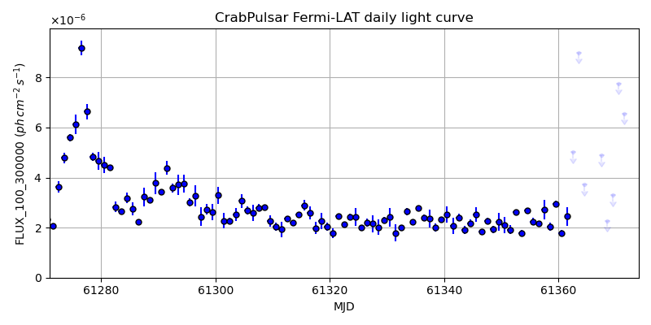
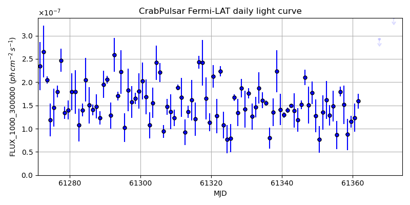
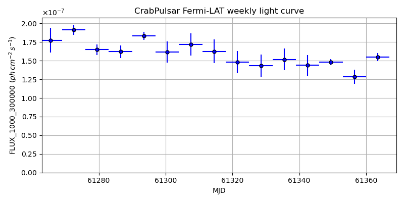

LAT Lightcurve site: https://fermi.gsfc.nasa.gov/ssc/data/access/lat/msl_lc/source/Crab_Pulsar
NED: Query
Time of last update of this page: UT: 2026-11-28 16:16 (MJD: 61372.678)
| Property | Value |
|---|---|
| R.A. | 5:34:31.92 |
| Dec. | 22:00:50.4 |
| z | 0.000 |
| 3FGL SpectrumType | |
| 3FGL PL Index | -1.00 |
| 3FGL Flux_100_300000 | -1.00e+00 |
| 3FGL Flux_1000_300000 | -1.00e+00 |
| 3FGL Flux >200 GeV | -1.00e+00 |
| 3FGL Extrap. Crab >200 GeV | -1.00 |
| 3FGL Flux After EBL Absorption >200GeV | -1.00e+00 |
| 3FGL EBL Crab Fraction >200GeV | -1.00 |

| MJD | dMJD | Flux | dFlux | Frac3FGL | FracCrab>200GeV | EBLFracCrab>200GeV |
|---|---|---|---|---|---|---|
| 61367.50 | 0.50 | 4.89e-06 | 0.00e+00 | 0.00 | 0.00 | -0.00 |
| 61368.50 | 0.50 | 2.28e-06 | 0.00e+00 | 0.00 | 0.00 | -0.00 |
| 61369.50 | 0.50 | 3.30e-06 | 0.00e+00 | 0.00 | 0.00 | -0.00 |
| 61370.50 | 0.50 | 7.76e-06 | 0.00e+00 | 0.00 | 0.00 | -0.00 |
| 61371.50 | 0.50 | 6.56e-06 | 0.00e+00 | 0.00 | 0.00 | -0.00 |
| MJD | dMJD | Flux | dFlux | Frac3FGL | FracCrab>200GeV | EBLFracCrab>200GeV |
|---|---|---|---|---|---|---|
| 61335.50 | 3.50 | 2.33e-06 | 0.00e+00 | 0.00 | 0.00 | -0.00 |
| 61342.50 | 3.50 | 2.26e-06 | 0.00e+00 | 0.00 | 0.00 | -0.00 |
| 61349.50 | 3.50 | 2.13e-06 | 0.00e+00 | 0.00 | 0.00 | -0.00 |
| 61356.50 | 3.50 | 2.40e-06 | 0.00e+00 | 0.00 | 0.00 | -0.00 |
| 61363.50 | 3.50 | 2.21e-06 | 0.00e+00 | 0.00 | 0.00 | -0.00 |

| MJD | dMJD | Flux | dFlux | Frac3FGL | FracCrab>200GeV | EBLFracCrab>200GeV |
|---|---|---|---|---|---|---|
| 61367.50 | 0.50 | 2.93e-07 | 0.00e+00 | 0.00 | 0.00 | -0.00 |
| 61368.50 | 0.50 | 7.27e-07 | 0.00e+00 | 0.00 | 0.00 | -0.00 |
| 61369.50 | 0.50 | 6.72e-07 | 0.00e+00 | 0.00 | 0.00 | -0.00 |
| 61370.50 | 0.50 | 1.24e-06 | 0.00e+00 | 0.00 | 0.00 | -0.00 |
| 61371.50 | 0.50 | 3.39e-07 | 0.00e+00 | 0.00 | 0.00 | -0.00 |

| MJD | dMJD | Flux | dFlux | Frac3FGL | FracCrab>200GeV | EBLFracCrab>200GeV |
|---|---|---|---|---|---|---|
| 61335.50 | 3.50 | 1.52e-07 | 0.00e+00 | 0.00 | 0.00 | -0.00 |
| 61342.50 | 3.50 | 1.44e-07 | 0.00e+00 | 0.00 | 0.00 | -0.00 |
| 61349.50 | 3.50 | 1.48e-07 | 0.00e+00 | 0.00 | 0.00 | -0.00 |
| 61356.50 | 3.50 | 1.29e-07 | 0.00e+00 | 0.00 | 0.00 | -0.00 |
| 61363.50 | 3.50 | 1.55e-07 | 0.00e+00 | 0.00 | 0.00 | -0.00 |
--------------------------------------------------------- Using user-supplied coords: 5:34:31.92 22:00:50.4 2000 --------------------------------------------------------- FLWO UT night of: 2026-11-29 Local Sid. @ Midnight: 04:08 Sunset (-15.0) (local, UT): 18:31 01:31 Sunrise (-15.0) (local, UT): 05:53 12:53 Moonrise (local, UT): 21:57 04:57 Moonset (local, UT): Moon phase: 0.72 --------------------------------------------------------- AzTime LSID UT Obj_el Obj_az Mn_el Mn_az Sep. --------------------------------------------------------- 18:31 22:39 01:31 0.6 64.0 -32.9 32.1 44.7 19:01 23:09 02:01 6.2 67.8 -29.4 38.9 45.1 19:31 23:39 02:31 12.1 71.4 -25.4 45.0 45.4 20:01 00:09 03:01 18.2 74.8 -21.0 50.6 45.8 20:31 00:39 03:31 24.4 78.2 -16.2 55.6 46.1 21:01 01:09 04:01 30.7 81.6 -11.1 60.2 46.5 21:31 01:39 04:31 37.0 85.0 -5.4 64.5 46.8 22:01 02:09 05:01 43.4 88.7 0.4 68.5 47.1 22:31 02:39 05:31 49.8 92.7 5.8 72.2 47.4 23:01 03:10 06:01 56.2 97.4 11.6 75.8 47.7 23:31 03:40 06:31 62.5 103.3 17.5 79.4 48.0 00:01 04:10 07:01 68.6 111.5 23.6 82.9 48.3 00:31 04:40 07:31 74.3 124.4 29.7 86.5 48.5 01:01 05:10 08:01 78.8 147.6 35.8 90.3 48.8 01:31 05:40 08:31 80.3 185.9 42.0 94.4 49.0 02:01 06:10 09:01 77.7 220.5 48.1 99.1 49.2 02:31 06:40 09:31 72.7 240.0 54.2 104.7 49.4 03:01 07:10 10:01 66.9 251.2 60.1 111.7 49.6 03:31 07:40 10:31 60.7 258.5 65.6 121.1 49.8 04:01 08:10 11:01 54.4 264.0 70.5 134.7 50.0 04:31 08:40 11:31 48.0 268.5 74.0 154.7 50.2 05:01 09:11 12:01 41.6 272.4 75.2 181.1 50.4 05:31 09:41 12:31 35.2 276.0 73.6 206.8 50.6 05:53 10:02 12:53 30.7 278.5 71.0 221.2 50.7 --------------------------------------------------------- Dark hours >55 deg.: 0.00